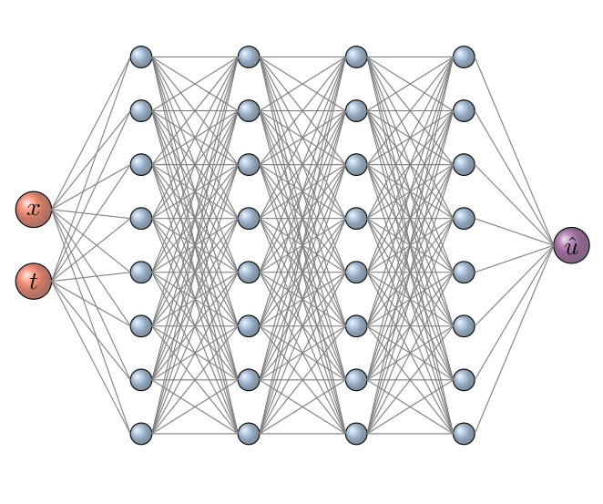
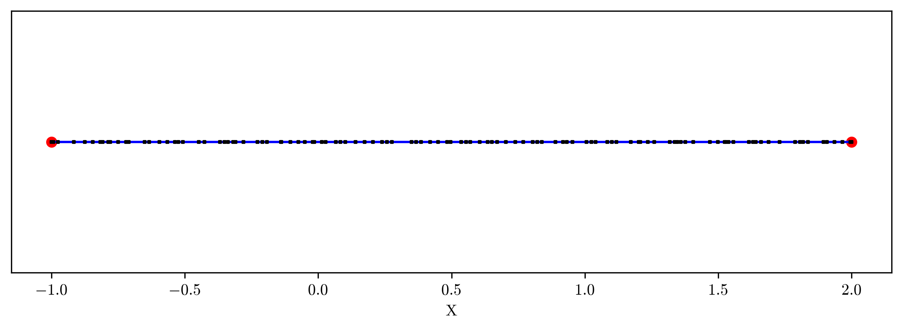
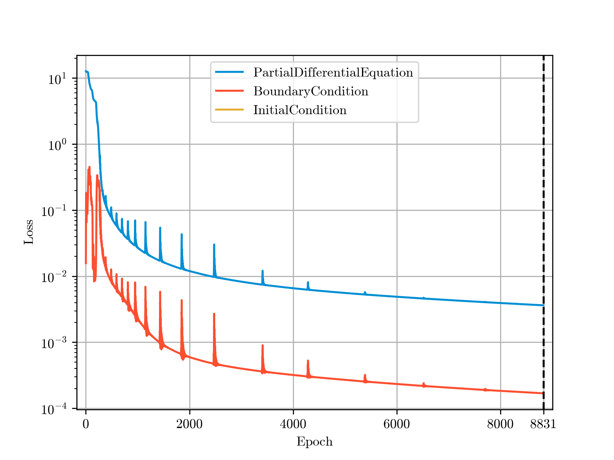
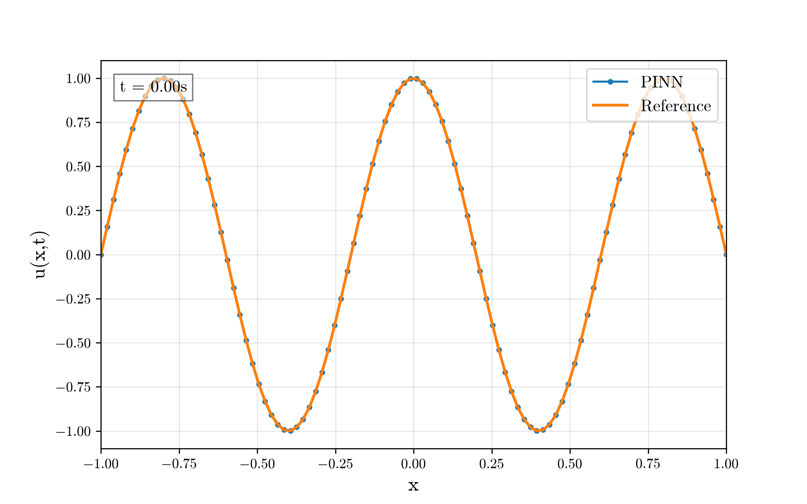

1D Diffusion#
The full runnable script can be found at examples/public/diffusion.py on GitHub.
Here we train a simple time-dependent 1D diffusion problem on \([-1, 1]\) from \(t = 0\) to \(t = 1\):
With defaults,
diffusion_coefficient = 0.25 # D
mode = 5 # n
Feel free to experiment with different values.
Domain#
First, we need to define the domain space of our problem, both spatially and temporally. Both are initialized similarly to the problem statement, using SpatialDomain and Time, respectively.
time = pinnjax.Time(min=0, max=1, step=0.1)
# from 0s to 1s with a 0.1s time-step
# the time-step is used exclusively for sampling.
domain = pinnjax.SpatialDomain(min=(-1,), max=(1,), times=time)
# if the problem isn't time-dependent use times=None or omit.
As the comment states, the discretization step in Time only factors into collocation point sampling, in certain instances, which will be explained in further detail later.
Model#
The order of this next section is a bit incongruent for tutorial purposes, but next we define the Optimization object, containing:
None of which are necessary to the functionality of the model, but can modify and potentially improve the results the model -- optimizing it.
An InputTransformation is applied to the inputs as a pre-processing step, such as:
- Normalization, for instance
NormalizationBetweenNeg1and1orNormalizationBetween0and1
An OutputTransformation is applied after the model output as a post-processing step.
And, finally, HardConstraint, which isn't as self-explanatory as the previous two, is applied following the OutputTransformation with the express purpose of improving model performance.
When training a model using data, physics, or both, we instill soft constraints on the model. While ideally a trained model perfectly adheres to physical-reality, we know some amount of error will always exist, thus soft constraints.
With hard constraints we mathematically modify the raw model output \(\mathcal{N}_{\theta}(\mathbf{x})\) to adhere with physics.
where:
or more simply, is a weighting function which blends to zero as the input point \(\mathbf{x}\) nears the constrained manifold \(\Gamma\). In the case of the initial condition, \(d\left(\mathbf{x}, \Gamma_{\mathrm{IC}}\right)=|t-t_{\min}|\).
Thus, in the original prediction formula \(\hat{u}\) we are left with only \(g(\mathbf{x})\) at \(\Gamma\).
Therefore, by defining \(g(\mathbf{x})\), or initial_condition_fn(), we can hard constrain our predictions.
def initial_condition_fn(pt):
# pt[0] is x, pt[-1] is t
return jnp.sin(mode * (jnp.pi / 2) * (pt[0] + 1))
# Hard Constraint on the Initial Condition
hard_ic = pinnjax.HardArrayInitialConstraint(
times=time,
initial_condition=initial_condition_fn
)
HardArrayInitialConstraint as been predefined for this purpose. As it's name implies initial_condition can be either an Array or a function, which was used here. A scalar version also exists, HardScalarInitialConstraint, as well as a version for spatial coordinates, HardDirichletConstraint.
Given the mathematics restrictions, the pre-made functions are limited to Dirichlet boundaries.
# Define the Optimization Object
optimization = pinnjax.Optimization(
# Input Transformations
input_transformation=pinnjax.NormalizationBetweenNeg1and1(domain=domain),
# Output Transformations
output_transformation=None,
# Hard Constraints
hard_constraint=(hard_ic, ),
)
Currently, you're limited to ONE InputTransformation and ONE OutputTransformation, but multiple HardConstraint which are applied consecutively. If the constraints are compatible with each other they will be combined to avoid them fighting each other.
These optimizations are not necessary, one can either set the parameter to None, which is the default value. Or, equivalently, set it to an empty Optimization object: optimization = pinnjax.Optimization(), which sets each optimization to an identity version of itself.
Considering the complexity of the problem, we opt for a relatively small Feedfoward Neural Network. There are other predefined architecture options, but they aren't suitable nor necessary for this use-case.
All NeuralNetwork have been written utilizing the equinox package as a base.
# Define the topology (specific to FNN) [input, layer .... layer, output]
topology = (2, 8, 8, 8, 8, 1) # [input: x, t] [output: u]
# Define the Activation Object.
# Currently, all interior layers get the same activation.
activation = pinnjax.Activation(jax.nn.tanh)
# Look at the jax.nn documentation for available options.
# If the selected option has args or kwargs:
# activation = pinnjax.Activation(jax.nn.gelu, kwargs={"approximate": False})
# Initialize the Model
model = pinnjax.FNN(
domain,
topology,
activation,
optimization=optimization, # optional parameter defaults to None
initialization=None, # optional parameter defaults to None
)
The Activation function, as noted, is applied to all interior layers, and is simply a wrapper for an jax.nn activation.
The initialization, or Initialization, is not utilized here, but refers to the initial state of the random weights and biases. The object is, again, simply a wrapper for jax.nn.initializers.
Here is a visual representation of the FNN, with
- 2 inputs (\(x\), \(t\)),
- 4 Hidden Layers with 8 nodes, and
- 1 output (\(\hat{u}\)).
Figure

Hence, topology = (2, 8, 8, 8, 8, 1).
Geometry#
A time-dependent BoundedLine contains FOUR interior primitive Shape objects:
geometry: ComplexShape = pinnjax.BoundedLine(
origin = domain.min,
end = domain.max,
times=time,
initial=True,
)
# Other options include BoundedBox (3D) and Bounded Rectangle (2D), or you can
# make your own pinnjax.ComplexShape() class, though naturally you'll have to
# write all additional features. There's also Hypercube which allows for higher-
# dimensional domains, which aren't necessarily spatial-temporal.
# initial=True means a shape will be added to the ComplexShape only at t=0.
# if you forget to add this initial shape, it can be added later with:
# geometry.add_initial().
# Since we are hard constraining our initial conditions, this isn't strictly
# necessary, but showing the model initial points, even when using hard
# constraints, during training has been shown to increase stability.
- A 2D problem uses
BoundedRectangle. - A 3D problem uses
BoundedBox.
Sampling#
We now need to sample points within all of these shapes. Currently, the only SamplingMethod is the SobolSampler so we use that here, but feel free to write your own.
method = pinnjax.SobolSampler(mode="point_count")
npoints = [1000, 20, 20, 10]
# Sample:
geometry.sample(method, sampling_values=npoints)
The results, while underwhelming for a 1D Geometry, can be plotted with .draw() method.
>>> geometry.draw(show_samples=True)
Figure

geometry.print_samples()
Shape 1 (Line): 1000 collocation points
Shape 2 (Dot): 20 collocation points
Shape 3 (Dot): 20 collocation points
Shape 4 (Line): 10 collocation points
The SobolSampler samples from the unit-hypercube following a pseudo-random sequence in an effort to most efficiently fill the sample space. In the case of our time-dependent Line, this is a 2D-hypercube. Therefore, while the visualization shows samples throughout the geometry spatially, they are also spread throughout time. This is also why we've opted to sample 20 points at each Dot -- they aren't in the same place in time.
The SobolSampler has three modes which determine how sampling_values is interpreted, in order to determine how many points to sample:
"point_count": uses the scalar value."grid_resolution": treats the value as a resolution and calculates the equivalent grid distribution setting the number of samples as a factor of this value dependent on sample dimensionality"density": treats the value as a density and calculates the length, area or volume of the sample space.
For both "grid_resolution" and "density" the calculated values are simply spatial. The temporal component is taken into account using the step parameter set in an earlier section as part of Time. They, simply, multiply the calculated value by the number of discrete time steps.
Since, we've used "point_count" this isn't factored in at all.
Residuals#
Now to put the PINN in PINN-JAX.
We need to define the Residuals for our model. A residual is the difference between the predicted value of our model \(\hat{u}\) and the "truth", a simple subtraction. In a data-driven network, both halves are readily available, with the "truth" contained in a dataset. However, for physics-informed neural networks, we need to calculate the "truth" throughout training dependent on the current point and prediction. Slightly more complex.
In this case,
- the PDE residual is \(\hat{u} - D u_{xx}\),
- the BC residual is \(\hat{u} - 0\), and
- the IC residual is \(\hat{u}(\mathbf{x}, 0) - g(\mathbf{x})\).
The equations are less complex than they appear. The complexity comes from the integration with JAX.
._residual(): handles a single point.._residuals(): handles a group of points usingvmap.__call__(): is called duringtrain().
Within this formulation DifferentialOperators are used, which provide some simple, pre-defined functions for derivatives with JAX-efficiency in-mind, but their use isn’t mandatory. What is mandatory, however, is providing a __call__() function with a points and ops parameter, regardless of whether it is used.
# PDE
# Make a subclass of pinnjax.PartialDifferentialEquation
class Diffusion(pinnjax.PartialDifferentialEquation):
# define:
# an __init__,
# a _residual (one point at a time),
# a _residuals() (vmapped)
# and an @eqx.filter_jit __call__()
# the _residual, _residuals, and __call__ must have the same inputs as here.
def __init__(self, diffusion_coeff: float = 1e-3):
self.diffusion_coeff = diffusion_coeff
def _residual(self, u: Array, ops: pinnjax.DifferentialOperators) -> Array:
u_t = ops.evolution_derivative(u)
u_xx = ops.laplacian(u) # in 1D this is d^2 u / dx^2
return u_t - self.diffusion_coeff * u_xx
def _residuals(self,
points: Array,
ops: pinnjax.DifferentialOperators
) -> Array:
vm = jax.vmap(lambda p: self._residual(p, ops), in_axes=0)
return jnp.nan_to_num(vm(points), nan=1e-6, posinf=1e6, neginf=-1e6)
@eqx.filter_jit
def __call__(self,
points: Array,
ops: pinnjax.DifferentialOperators
) -> Array:
return self._residuals(points, ops)
# BC
class DiffusionBC(pinnjax.BoundaryCondition):
# same deal here, but for a subclass of pinnjax.BoundaryCondition
def __init__(self):
super().__init__()
def _residual(self,
points: Array,
ops: pinnjax.DifferentialOperators
) -> Array:
u_val = ops.T(points)
return u_val
def _residuals(self,
points: Array,
ops: pinnjax.DifferentialOperators
) -> Array:
vm = jax.vmap(lambda p: self._residual(p, ops), in_axes=0)
return jnp.nan_to_num(vm(points), nan=1e-6, posinf=1e6, neginf=-1e6)
@eqx.filter_jit
def __call__(self,
points: Array,
ops: pinnjax.DifferentialOperators
) -> Array:
return self._residuals(points, ops)
# IC
# Since we are hard constraining our Initial Conditions this isn't strictly
# necessary, but it helps to make sure it's working.
class DiffusionIC(pinnjax.InitialCondition):
# This particular class utilizes the predefined functions of the parent
# InitialCondition class but in effect it has the same format as the other 2
# types.
# Functionally, all 3 (PDE, BC, IC) are identical in function, but they are
# separated for the purpose of weighted loss functions and adaptive weights.
def __init__(self):
super().__init__(lambda pt: jnp.sin(mode * (jnp.pi / 2) * (pt[0] + 1)))
With our Residuals define them, we can assign them to our geometry using .assign_residuals(). The list of residuals should follow same order as the generated shapes, as was the case when sampling.
initial_condition = DiffusionIC()
boundary_condition = DiffusionBC()
pde = Diffusion(diffusion_coefficient)
# Assign the Residuals to the shape.
# Again here you need to remember the number of shapes you have and their order.
residuals: list[pinnjax.Residual] = [
pde,
boundary_condition,
boundary_condition,
initial_condition,
]
# Assign them:
geometry.assign_residuals(residuals)
Now the same for Loss.
While, a Residual is the difference between the prediction and the "truth". The Loss is the metric applied to it, such as:
- Mean Error (ME):
ResidualMeanError - Mean-Squared Error (MSE):
ResidualMSError - Mean-Absolute Error (MAE):
ResidualMAError - ...
However, as with everything in PINNJAX, you are not limited to what has been created, simply create a subclass of Loss, define your CustomLoss and all systems will function as normal.
# Assign the Loss function
geometry.assign_loss(pinnjax.ResidualMSError())
Rather than a list, we assign all Shapes the same Loss. However, it is possible to assign individual Loss by providing a list. Similarly, a single Residual can be used in .assign_residuals() to assign all Shapes the same Residual.
Multiple Residuals or Losses can be assigned to the same Shape.
geometry.assign_residuals([
[pde1, pde2],
bc
])
Training#
With the Model, Geometry, Residuals, Losses, and Samples, all defined, all that is left is to train.
But first, we need an Optimizer. Like Activation, Initialization, mentioned in Model, this also is a wrapper, in this case for optax.
Here Adam is used as it is often considered one of the "default" optimizer, and, thus, a good starting point for hyperparameter optimization. A different optimizer, from this list can be slotted in instead, but depending on the complexity of their output and call parameters, they aren't all guaranteed to work.
scheduler = 0.001
optimizer = pinnjax.Optimizer(
optax.adam,
kwargs={"learning_rate": scheduler, "b1": 0.9, "b2": 0.999},
)
We aren't limited to using a scalar value for learning_rate, we can instead use a learning rate scheduler which updates throughout the training period. More information about these, and other features, can be found in the docs for optax.
scheduler = optax.exponential_decay(
init_value=1e-2,
transition_steps=100, # decay every 100 epochs
decay_rate=0.95, # 5% reduction each time
end_value=1e-5, # don't go below this
)
Lastly, the Training object, which contains all important information about the training configuration.
training = pinnjax.Training(
optimizer,
epochs=20000, # set the number of epochs
# everything after here is optional and has a default value.
use_adaptive_weights=False,
# automatically update the weighting of the
# multi-objective loss function
adaptive_alpha=0.9,
# how much of current weights effects new calculation.
update_weights_every=1000, # how often to update weights
update_weights_after=250,
# when to start updating weights (starting very early is
# unstable)
train_mode="class", # type or class type divides the
# losses (for the purpose of adaptive weights) into
# Diffusion, pde2, DiffusionBC, bc2, etc... class divides
# into PDE, BC, IC
balance_magnitudes=False,
# since the expected residual loss of one residual might
# be very different from another this aims to allow the
# model to learn all objectives, by pulling the losses
# closer in magnitude.
magnitude_clip=1e-2,
# limit of how much the loss can be modified.
early_stopping=True,
# if loss has converged, whether to stop training early.
rel_tolerance=0.0001,
# compared to the current best model, how much better
# is the new model (relatively)
patience=1000,
# how many epochs without improvement (better than
# the relative tolerance) before stopping
)
And now we train.
updated_model = pinnjax.train(
model,
geometry,
training,
verbosity=50, # how often (in epochs) to print the results (loss).
print_mode="class", # same as train_mode but for the print.
)
Throughout training, the loss is saved to the geometry and can be plotted with the .plot_loss() method.
geometry.plot_loss(
save=SAVE,
mode="type",
show_best_epoch=True,
show=SHOW,
save_location=model_path,
save_format=".png"
)
Figure

This plot is useful, but it also allows me to visually explain some the parameters from earlier. Firstly, early_stopping which is why despite epochs = 20000 the training stopped after 8831. This is because the model failed to improve by more than 0.01% (rel_tolerance=0.0001) for more than 1000 consecutive epochs (patience=1000).
Total Time = 46.781s
Final Loss:
Class:
Diffusion = 0.00361989
DiffusionBC = 0.000168309
DiffusionIC = 0
Type:
PartialDifferentialEquation = 0.00361989
BoundaryCondition = 0.000168309
InitialCondition = 0
Saving#
Both for model reuse and result tracking, it is important to both save the results and the model itself. The first function .save_model(), saves the model weights, as its name suggests, which allows us to use .load_model() at a later date. However, automatic model loading is only confirmed to work properly for FNN models. In order to load a model you need to reconstruct the same model, including the exact same Optimization. Thus, .load_model() is not strictly necessary, as it is merely attempting to read the model folder, and what was saved using .save_configuration().
# now we just save the model. this function will also save a .json file
# which will make it much easier to use this model for predicting later.
model_path = pinnjax.save_model(updated_model, path=model_path, return_path=True)
# since we have a return variable 'model_path' we need return_path = True, but
# since we already have model_folder as Path, it's not necessary. in this case
# model_path == model_folder.
# you might have noticed config.LOGGER throughout the code. Using logging is
# more computationally efficient than using print() and it gives us the option
# save everything printed to the console to a .log file for looking at later.
# will you ever want to look at it? probably not, but it's nice to know it's
# there. The .log file will only be generated if you've set up the logger,
# at the start of the script, such as pinnjax.config.setup_logger().
# however, the default save location is just directly next to the script being
# used, which is a bit silly when we are saving all the results. this function
# moves that file to the model_path we just made.
if model_path is not None:
pinnjax.config.relocate_log(model_path)
# this is where we save important training parameters, so in the event the model
# is successful (or unsuccessful), we will have record of each parameter used.
# that being said, it can only save what you tell it to.
pinnjax.save_configuration(
model_path,
timing=timing,
geometry=geometry,
model=model,
training=training,
)
Prediction#
Since this was a purely-physics-informed neural network, the true solution never came into the picture, however, for the purpose of verifying out results its rather important.
Luckily, there is an analytical solution:
def analytic_solution(_x, t, _mode=1, D=1e-3):
"""Analytical solution for IC.
u(x,t) = exp(- (pi/2)^2 * D * t) * sin(pi/2 * (x+1))
"""
k = _mode * (np.pi / 2)
return np.exp(-(k**2) * D * t) * np.sin(k * (_x + 1))
Of course, the existence of an analytical solution negates any purpose for training a surrogate, but this is a simple example after all.
A LineGrid is the evaluation mesh. Considering the sampled collocation points are sparsely spanning the entire spatial-temporal domain, we can instead sample uniform points exclusively for prediction.
# Grid Construction Rather than our Sobol points, we can use
# our model to predict using a simple grid.
#
# Here is a predefined LineGrid, since this is a 1D problem, you are naturally
# limited to a LineGrid, but other options include RectangularGrid,
# RectangularGrid3D, and ComparisonGrid. A 2/3D Domain can use a lower
# dimensional grid by the fixed_coordinates.
grid = pinnjax.LineGrid(
domain=domain, axis="x", num_points=100, time_range=(0, 1), num_times=100
)
# inputs should be self-explanatory.
# predict_evolution() is a wrapper around the function `.predict()`
# which loops through the time-steps of the Grid.
preds = pinnjax.predict_evolution(_model, _grid)
# shape: (num_times, num_points)
As seen in the full script, a specific wrapper function was written to plot both the analytical and predicted solution simultaneously however, within predict_evolution() is called with the trained model and this grid.
Where we can now see our visualized results.
Figure

However, this is not where the story ends, but rather the beginning.
Hyperparameter Optimization#
The purpose of hyperparameter optimization is to modify the parameters in such a way to optimize the results. While there are many, much more advanced and methodical ways to achieve this, none of which have been fully implemented into PINNJAX, here we will attempt 'Random Search', and simply just modify on parameter at a time, utilizing expert knowledge and luck.
First, let's change the Optimizer from Adam to LBFGS. Since each epoch of LBFGS is significantly more computationally expensive compared to Adam, we've also simultaneously reduced the number of epochs to 1000.
optimizer = pinnjax.Optimizer(
optax.lbfgs,
kwargs={
"learning_rate": scheduler,
"memory_size": 50, # default 10
"linesearch": optax.scale_by_zoom_linesearch(
max_linesearch_steps=75, # default 15
initial_guess_strategy="one",
),
}, # recommended by documentation
)
Figure
Total Time = 15m: 46.685s
Final Loss:
Class:
Diffusion = 0.0121203
DiffusionBC = 0.000849124
DiffusionIC = 0
Type:
PartialDifferentialEquation = 0.0121203
BoundaryCondition = 0.000849124
InitialCondition = 0
It appears this version is slightly worse, both visually and numerically, and took significantly longer. However, in particular, the error seems most visually apparent at the boundaries. Considering, we've already managed to perfectly hard constrain the initial condition, it might be worth it to constrain the two Dirichlet boundaries, as well.
So, let's return to the original optimizer, Adam, and add some additional constraints.
hard_ic = pinnjax.HardArrayInitialConstraint(
times=time,
initial_condition=initial_condition_fn
)
hard_dc_left = pinnjax.HardDirichletConstraint(
domain,
condition=0.0,
side=(-1,)
)
hard_dc_right = pinnjax.HardDirichletConstraint(
domain,
condition=0.0,
side=(1,)
)
optimization = pinnjax.Optimization(
input_transformation=pinnjax.NormalizationBetweenNeg1and1(domain=domain),
output_transformation=None,
hard_constraint=(hard_ic, hard_dc_left, hard_dc_right),
)
Since all three of these constraints are compatible with each other they will be combined.
Figure
Total Time = 1m: 26.793s
Final Loss:
Class:
Diffusion = 0.00535355
DiffusionBC = 3.7494e-31
DiffusionIC = 0
Type:
PartialDifferentialEquation = 0.00535355
BoundaryCondition = 3.7494e-31
InitialCondition = 0
And, thus, here we achieve the best results so far.